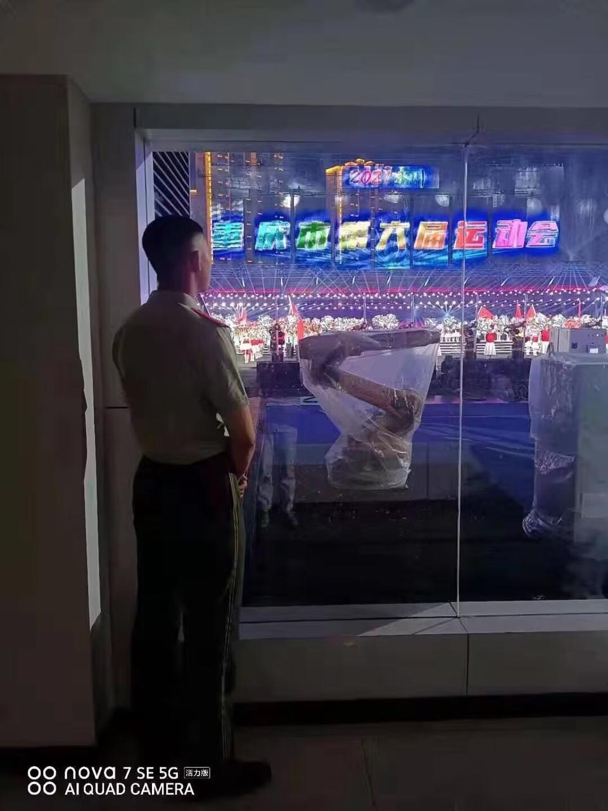
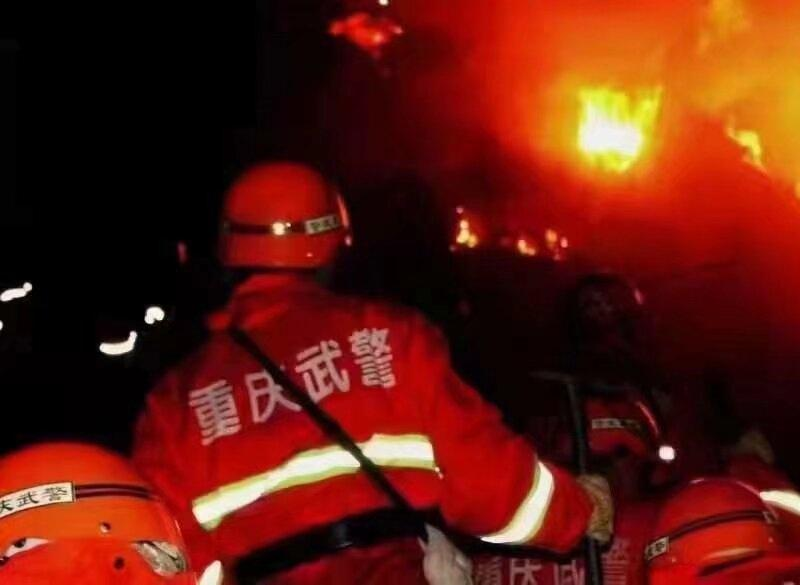
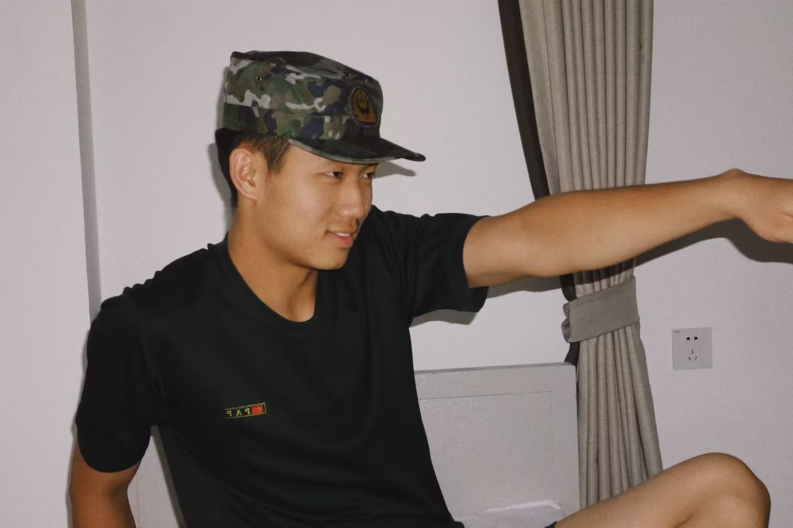
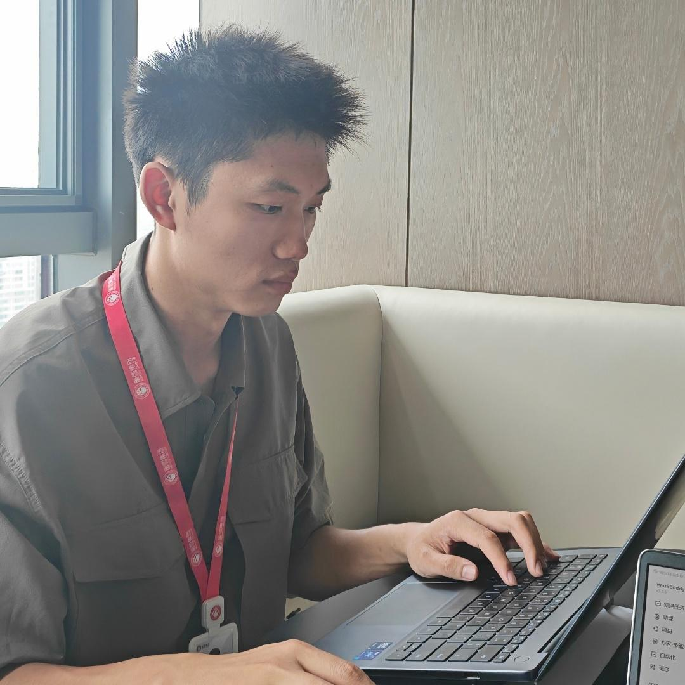

01 / 上海
法学，是起点。
2025 年完成学业本科在上海读法学。读了一年之后保留学籍，赴重庆入伍；退伍后回校完成学业，于 2025 年毕业。
大学期间，我也是棒球队校队的一员，曾获大学生全国锦标赛亚军。课堂与球场，分别教会我思考与配合。法律训练让我习惯先厘清事实，再形成判断。


02个人经历
从课堂到军营，从军营到职场。每一段，都留下了自己的分量。
本科在上海读法学。读了一年之后保留学籍，赴重庆入伍；退伍后回校完成学业，于 2025 年毕业。
大学期间，我也是棒球队校队的一员，曾获大学生全国锦标赛亚军。课堂与球场，分别教会我思考与配合。法律训练让我习惯先厘清事实，再形成判断。
两年军旅，是纪律，也是淬炼。站岗、拉练、保障大型活动，把一个贵阳男孩磨成了一个能扛事的人。
服役期间担任文书兼通讯员。2022 年参加重庆山火扑救任务，在灭火一线连续奋战，获战时嘉奖。
把活动、训练与军旅日常的片段连在一起。这段视频，是我对两年军旅生活的一次回看。
完整视频 · 2 分 25 秒




刚毕业时，曾把律师或公务员作为求职方向。后来进入企业监察岗位，在实践中逐步理解商业运作，也找到法律训练的另一种用武之地。
负责职务侵占、挪用资金、商业欺诈等案件的调查与处理，熟悉茶饮连锁品牌的内部运营。



选择与兴趣和长期规划更契合的方向，把学习的机会抓在手里。期待回头看时，能够为那段奋力拼搏的自己鼓掌。
开始探索 IP＋AI，尝试口播内容。读书、写作与表达，让学习继续发生在工作之外。